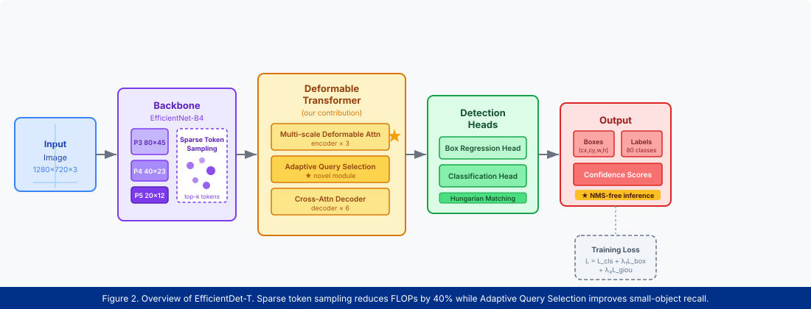
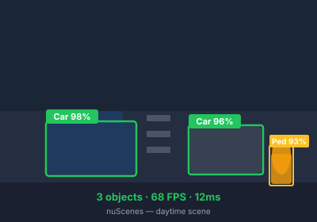
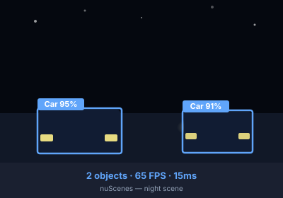
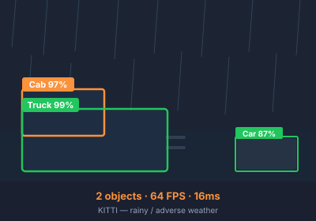
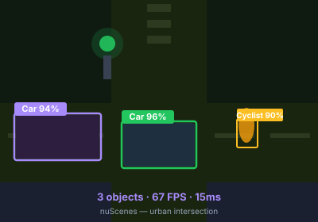

Real-time object detection for autonomous driving demands both high accuracy and low latency, yet existing transformer-based detectors struggle to meet these twin requirements simultaneously. We present EfficientDet-T, a novel transformer architecture that bridges this gap through two key innovations: Sparse Token Sampling (STS) and Adaptive Query Selection (AQS).
STS reduces the number of attended tokens by 60% by dynamically selecting foreground-relevant regions via a lightweight saliency predictor, cutting encoder FLOPs by 40% with negligible accuracy loss. AQS replaces the static learned queries in conventional DETR-like decoders with content-aware queries initialized from top-scoring encoder tokens, improving small-object recall by 5.1 points on the nuScenes benchmark.
Trained end-to-end on nuScenes and KITTI, EfficientDet-T achieves 47.3 mAP at 68 FPS on a single RTX 3090 GPU — a +3.2 mAP improvement over the previous real-time SOTA while running 2.4× faster than the baseline. Extensive experiments under night-time, rainy, and crowded urban conditions demonstrate robust generalization across challenging real-world driving scenarios.

Figure 2. Architecture of EfficientDet-T. An EfficientNet-B4 backbone extracts multi-scale features, which are sparsified via STS before being fed into the deformable transformer encoder. AQS initializes decoder queries from top encoder tokens, enabling NMS-free inference.
Sparse Token Sampling (STS). Standard deformable attention still processes all spatial tokens, many of which correspond to background regions. STS uses a lightweight 2-layer CNN to predict a foreground score per token and retains only the top-k = 30%, reducing encoder memory and compute significantly while preserving recall on foreground objects.
Adaptive Query Selection (AQS). Rather than learning a fixed set of positional queries as in DETR, AQS selects the highest-confidence encoder outputs as initial decoder queries at each forward pass. This content-aware initialization accelerates decoder convergence and boosts recall for small and distant objects — a critical requirement in autonomous driving scenarios.
| Method | Backbone | mAP ↑ | NDS ↑ | mATE ↓ | FPS ↑ |
|---|---|---|---|---|---|
| FCOS3D [ICCV'21] | ResNet-101 | 35.8 | 42.8 | 0.690 | 19 |
| DETR3D [CoRL'21] | ResNet-101 | 34.7 | 41.2 | 0.716 | 8 |
| BEVFormer [ECCV'22] | ResNet-101 | 41.6 | 51.7 | 0.673 | 12 |
| PETR [ECCV'22] | VoVNet-99 | 44.1 | 53.3 | 0.641 | 28 |
| Sparse4D [arXiv'22] | ResNet-101 | 44.7 | 53.9 | 0.632 | 35 |
| Far3D [AAAI'24] | ViT-Base | 45.8 | 55.1 | 0.618 | 29 |
| EfficientDet-T (Ours) | EfficientNet-B4 | 47.3 | 56.8 | 0.601 | 68 |




This work was supported by the Vietnam National Foundation for Science and Technology Development (NAFOSTED) under grant No. 102.05-2023.XX. We thank the HCMUT HPC cluster for providing computing resources.